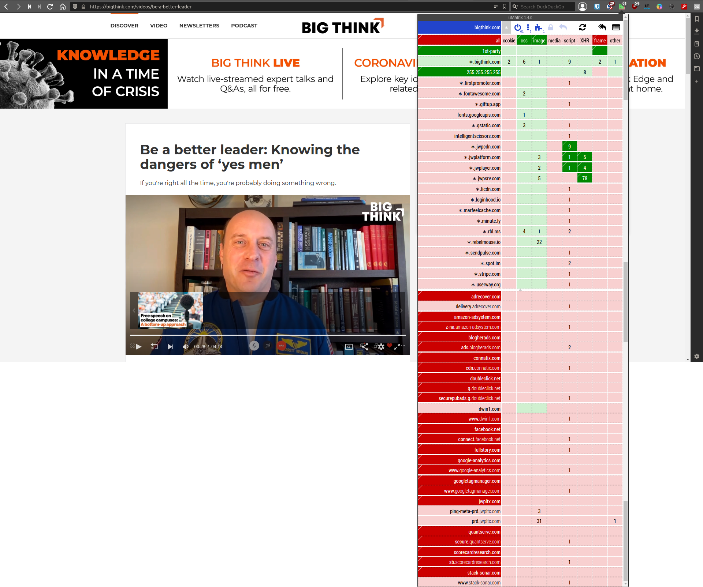

Because marketing and advertising has ruined the World Wide Web.
At the very least use the ad blocker uBlock Origin on a PC. On Android you can use DNS changer Nebulo to block ads in all your apps by using AdGuard DNS IPs: 94.140.14.14, 94.140.14.15.
The Web has become infested with tools for advertising. Let's just call it what it is: sheer manipulation—evil (1). By means of your and everyone else's data, accurate predictions are made about human behavior. Armed with such data, agencies are able to make you want things that you don't need by applying the right personally tailored stimuli. Websites have also become increasingly unpleasant to use: ads, cookie consent warnings, CPU intensive scripts, redundant content or visual effects, et cetera. All of this significantly decreases speed and increases bandwidth use. Fortunately you can set up impenetrable defenses; right after the anti-commercial break:
Take a look at bigthink.com, a seemingly respectable website featuring a video with genuine advice from an astronaut: https://bigthink.com/videos/be-a-better-leader. Tread carefully though, because it has 14 scripts from blacklisted sites executing code on your device by default.
These scripts' sole purposes are tracking and consumer manipulation. Hence why these domains—shown in dark red—are blacklisted by default as well. They are completely unnecessary for the website to function properly. Moreover, they decrease speed, increase bandwidth usage, and use more power. Take notice that there are non-blacklisted domains that run scripts by default as well; 15 of them. Unless you're adamant on reading comments or seeing superfluous annoying elements on the site, these can also be left disabled. That's 29 good-for-nothing scripts; “Take it all, you fools!” Their audacity is undeniable.
Conversely, shown in dark green are the only domains that must be enabled in order for the video to play. Otherwise the website is usable with every other domain being blocked besides bigthink.com itself.
The software and extensions below should enable every layman to reduce their intrusive and unpleasant web experiences to zero, provided a willingness to learn and a pinch of experience (e.g. some websites' functionalities can be disabled without you realizing it).
On a PC.
On Android. (4)
No.
“About blocking ads: It's important to note that blocking ads is NOT theft. Don't fall for this creepy idea, which is the criminalisation of the inalienable right to privacy. Ads and trackers violate our privacy, make websites much slower, and deliver dangerous malware. We say no to them. We have the right to decide what we download from the Internet, what we send to it, and what we display on our screen. We have the right to refuse downloading source code that works against us. It's our bandwidth and computer, and no-one can decide for us what to use them for. A service that has valuable features should be able to sell us a subscription, without blackmailing us with ominous ads.”
Quoted from https://lichess.org/ads; from which I got some of the recommendations above. By the way, lichess is completely free, devoid of any ads and trackers, financed by its users. A prime example of how the World Wide Web could be, and should be.
There you have it: a list of proverbial Trojan condoms against literal Trojan horses. Have fun taking agency of your Web experience again.
♔
PS Here's an exhaustive list of software I use and recommend.
Comments.
You can use your Mastodon account to reply to this post.